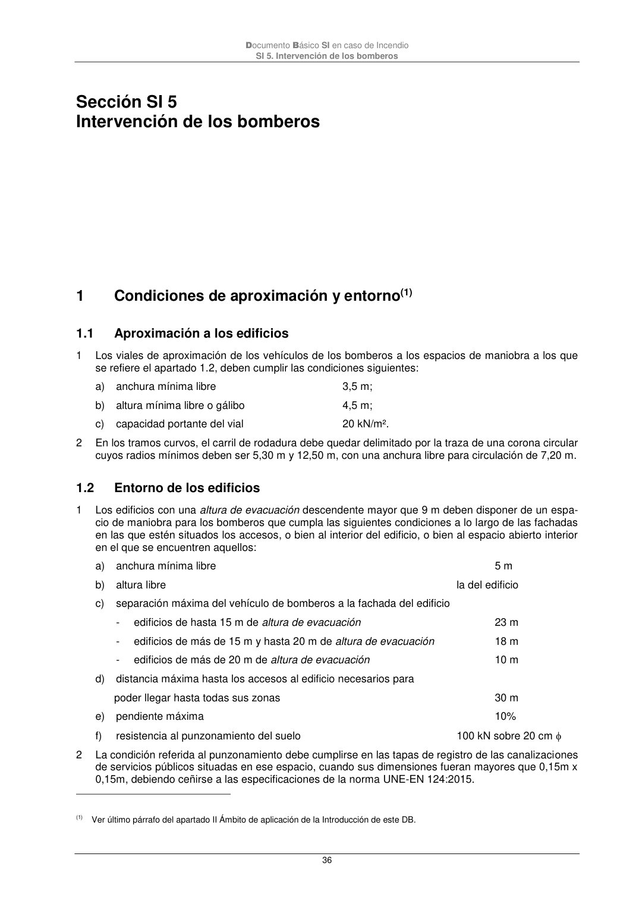

DB-SI Seguridad en caso de incendio · edición 2025-03-04 · capa oficial
Documento DB-SI-oficial · SHA-256 del PDF 0a2e78cd62471d9cc5cfe2efbc6aa39fdbad73c124aea7b039f9de96c141e105
Copia fiel del PDF fuente · Fuente oficial
Ficha de la disposición en la fuente oficial
Formatos: JSON del segmento · Markdown
Aproximación a los edificios 1 Los viales de aproximación de los vehículos de los bomberos a los espacios de maniobra a los que se refiere el apartado 1.2, deben cumplir las condiciones siguientes: a) anchura mínima libre 3,5 m; b) altura mínima libre o gálibo 4,5 m; c) capacidad portante del vial 20 kN/m². 2 En los tramos curvos, el carril de rodadura debe quedar delimitado por la traza de una corona circular cuyos radios mínimos deben ser 5,30 m y 12,50 m, con una anchura libre para circulación de 7,20 m. 1.2
